Introduction
In Week 1 I created a VM by hand in the cPouta web console: clicking through the image, flavor, key pair, security group and floating IP screens, then installing Apache over SSH. This week's assignment was to rebuild that same result using Infrastructure as Code — OpenTofu describing every resource in files, and cloud-init configuring the server automatically on first boot, with no manual SSH setup involved.
Part A – Infrastructure as Code Questions
1. Explain the difference between declarative and imperative infrastructure automation. What does idempotency mean, and why is it important?
Imperative automation means writing an explicit, ordered sequence of steps to reach a result, you’re responsible for checking state and sequencing each action. Declarative automation means describing the desired end state and letting the tool figure out how to get there, comparing what’s declared against what exists and applying only the difference. Terraform, Kubernetes, and Ansible’s resource modules are declarative; shell scripts and traditional Ansible playbooks are imperative.
The key practical difference: if an imperative script fails halfway through, the system is left in an inconsistent state with no built-in recovery. A declarative tool can simply be re-run, since it only applies what’s still missing.
Idempotency means applying the same configuration multiple times produces the same result as applying it once, with no duplicate resources or unintended side effects. If the environment already matches the desired state, nothing happens; if it’s drifted, only the necessary changes are applied.
It matters because it makes automation safe to retry after a failure, prevents duplicate resources from re-runs, corrects configuration drift automatically, and removes the need to manually audit existing state before deploying.
Sources: https://opsmill.com/blog/declarative-vs-imperative-automation/ , https://sailor.sh/blog/terraform-infrastructure-as-code-concepts-declarative-imperative/, https://www.automq.com/blog/infrastructure-as-code-iac-vs-traditional-infrastructure-management
2. Why was OpenTofu created? Compare Terraform and OpenTofu — would the choice between them matter to you as a developer, or to a company?
In August 2023, HashiCorp changed Terraform’s license from the open-source MPL 2.0 to the more restrictive Business Source License, limiting how competitors and commercial platforms could use the code. This broke trust with many developers and vendors, and within weeks a coalition forked the last MPL-licensed version into OpenTofu, donating it to the Linux Foundation, where it is now also part of the CNCF and governed by a multi-company steering committee rather than one vendor. The move gained more weight after IBM acquired HashiCorp in 2025, making OpenTofu’s neutral governance even more appealing to organizations wary of depending on a single company’s roadmap.
Technically, the tools remain very close: both use the same HCL syntax, workflow, and compatible state format, making OpenTofu largely a drop-in replacement. They have started to diverge, though, OpenTofu has shipped native state encryption and earlier variable evaluation, while Terraform concentrates its value in the commercial HCP Terraform platform, with SSO, audit logs, and official vendor support.
Whether this matters depends on who’s asking. For a developer, the difference is mostly theoretical, learning one transfers almost directly to the other. For a company, it matters more: a business building a commercial product faces real legal exposure under Terraform’s BSL, making OpenTofu the safer license choice, while a regulated enterprise like a bank or hospital may prefer Terraform for its commercial support and compliance tooling.
In short, OpenTofu exists because of a licensing decision many saw as a betrayal of Terraform’s open-source roots. The real choice today is less about code quality, since the two are nearly identical there, and more about licensing risk and governance preference.
Sources: https://devsecops.ae/opentofu-vs-terraform/, https://platformengineering.org/blog/terraform-vs-opentofu-iac-tool
3. What is configuration drift, how does it happen, and how does an IaC tool detect it?
Configuration drift is the gradual, unintended divergence between a system’s actual, running state and the baseline it was meant to match, whether that baseline is documented manually or defined in version-controlled code. As a system is used and modified over time, small undocumented changes accumulate, and eventually the live environment no longer reflects what engineers believe it looks like. This gap matters because it quietly undermines security, compliance, and performance, often without anyone noticing until something breaks or an audit fails.
Drift most commonly happens through manual, out-of-band changes. An engineer applies a quick fix directly through a cloud console or CLI during an incident, perhaps widening a firewall rule or bumping up a server’s resources, intending to update the proper configuration later but never does. This pattern, sometimes called “ClickOps,” accounts for the large majority of drift cases in practice. Beyond manual fixes, drift also creeps in through automation operating outside the intended workflow, such as a legacy script or monitoring tool making changes the infrastructure-as-code (IaC) system never sees; through cloud providers quietly updating default settings or service behavior on their end; and through problems with the IaC tooling itself, like a corrupted or outdated state file, or two overlapping configurations managed by different teams stepping on each other. A well-known real-world case is the 2020 Twilio breach, where a drifted S3 bucket permission, originally changed as part of a fix, went undetected for years before attackers exploited it.
IaC tools detect drift by continuously comparing two things: the desired state declared in version-controlled configuration files, and the actual state of resources running in the cloud. Terraform, for example, maintains a state file that maps each piece of code to the real resource it created. When a check runs, typically via terraform plan, the tool queries the cloud provider’s API to refresh its understanding of what currently exists, then compares those live properties against what the code specifies. Any mismatch, say a security group rule changed manually in the console, is surfaced as a proposed change before anything is actually applied, giving the team visibility into exactly what drifted and why. Many teams schedule this comparison regularly or build it into CI/CD pipelines, so drift is caught and flagged automatically rather than discovered by accident weeks later.
It’s worth noting this detection has a blind spot: a tool can only compare against resources it already manages, so anything created entirely outside the IaC workflow stays invisible until it’s explicitly brought under management, for instance with terraform import.
Sources: https://www.ibm.com/think/topics/configuration-drift, https://snyk.io/articles/infrastructure-as-code-iac/detect-prevent-configuration-drift/
4. Explain the difference between provisioning and configuration management. Where do cloud-init and Ansible fit in?
Provisioning and configuration management are two distinct phases in an infrastructure’s lifecycle. Provisioning is the act of creating raw infrastructure from scratch, launching virtual machines, setting up networks, subnets, firewalls, and databases. It gives you the “blank canvas” server or environment. Tools like Terraform and CloudFormation handle this by provisioning the servers themselves and leaving the job of configuring them to other tools.
Configuration management, by contrast, is the act of installing and maintaining software and system state once that infrastructure exists, installing packages, creating user accounts, managing security patches, and preventing configuration drift where servers slowly diverge from one another. Tools like Ansible, Chef, and Puppet specialize in this.
Cloud-init is an industry-standard tool for first-boot customization. It bridges the gap between raw provisioning and configuration management: when a provisioning tool creates a new VM, cloud-init runs once during that first boot cycle, injecting SSH keys, setting the hostname, configuring basic networking, creating initial user accounts, and running simple setup scripts. It’s deliberately lightweight and “just-in-time,” it doesn’t run continuously or check ongoing server health, and using it for complex, evolving software deployments quickly becomes unmanageable.
Ansible is primarily a configuration management tool. It connects to already-running infrastructure, typically over SSH, to handle ongoing, more complex software setup: deploying applications, updating configuration across many servers at once, and keeping systems in a consistent state over time. Ansible can also provision infrastructure through cloud modules, but that’s not its core design strength, Terraform remains the better fit for actual resource provisioning.
A common pipeline handoff looks like this: a provisioning tool (Terraform) launches a blank VM, cloud-init runs at first boot to inject SSH keys and do minimal setup, and Ansible then connects over that SSH access to install software, deploy application code, and configure the server fully. Each tool hands off to the next at the point where its own strengths run out
Sources: https://www.gruntwork.io/blog/why-we-use-terraform-and-not-chef-puppet-ansible-saltstack-or-cloudformation, https://devopscube.com/infrastructure-as-code-configuration-management/
Part B – Rebuilding the Week 1 VM with OpenTofu
The project lives entirely in six files plus the usual Git housekeeping. versions.tf and
main.tf were given by the assignment; variables.tf, cloud-init.yaml,
outputs.tf, and the terraform.tfvars pair were written to meet the stated
requirements.
How the resources reference each other
- Project network (data source):
data.openstack_networking_network_v2.projectlooks up the existing CSC network by name — it is read, not created. - Key pair:
openstack_compute_keypair_v2.webuploads only my public key, read from the path inssh_public_key_path. - Security group + rules:
openstack_networking_secgroup_v2.webis the firewall; the two rule resources attach to it by itsid, restricting SSH tovar.ssh_allowed_cidrand opening HTTP to everyone. - Network port:
openstack_networking_port_v2.websits in the project network and references the security group's id so the port is protected by those rules. - VM:
openstack_compute_instance_v2.webreferences the port and the key pair, and renderscloud-init.yamlthroughtemplatefile()as itsuser_data. - Floating IP:
openstack_networking_floatingip_v2.webdepends on the port's id — OpenTofu uses this reference to know the floating IP must be created/attached after the port exists.
Why some variables have no default
project_network, ssh_allowed_cidr and student_name are all
declared without a default. For project_network and student_name,
it's because the values are specific to me and shouldn't be silently guessed. For
ssh_allowed_cidr it matters even more: a stale or overly broad default (like
0.0.0.0/0) would quietly leave SSH open to the entire internet every time someone forgot to
override it. Forcing the value to be supplied every time, with a validation rule that rejects anything
that isn't a real CIDR block, makes that mistake much harder to make by accident.
Step 2 – Install OpenTofu
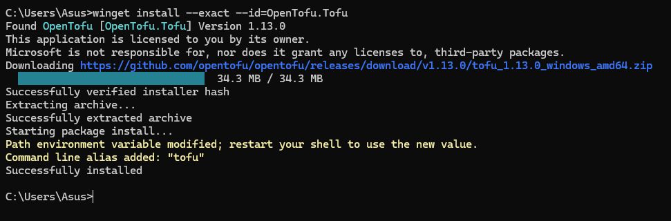
Installed with winget install --exact --id=OpenTofu.Tofu — v1.13.0.
Step 3 – Project folder and Git repo
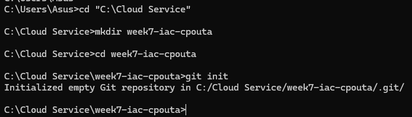
Created week7-iac-cpouta and ran git init.
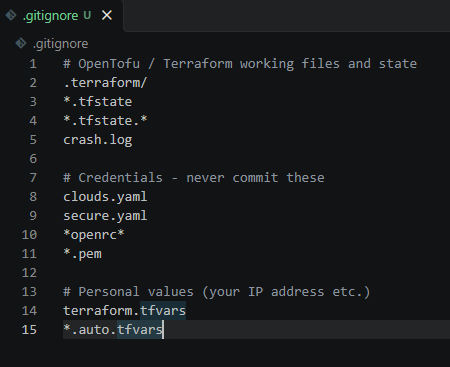
Wrote .gitignore first, before any credential file existed in the folder.
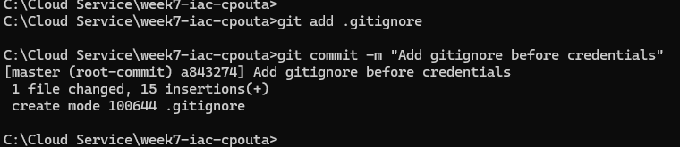
Committed the .gitignore on its own, so it was active before clouds.yaml was ever downloaded.
Step 4 – Application Credential
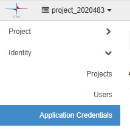
Identity → Application Credentials in the cPouta dashboard.
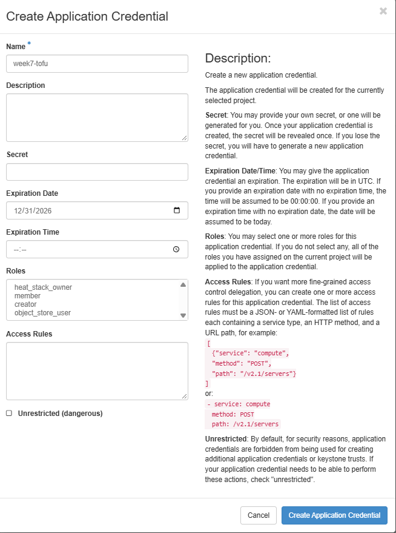
Named it week7-tofu, left Secret blank so one was generated, and did not tick Unrestricted.
After downloading clouds.yaml into the project folder, git status confirmed it
did not appear as a trackable file — the .gitignore entry for clouds.yaml
was already working.
Step 5 – SSH key pair
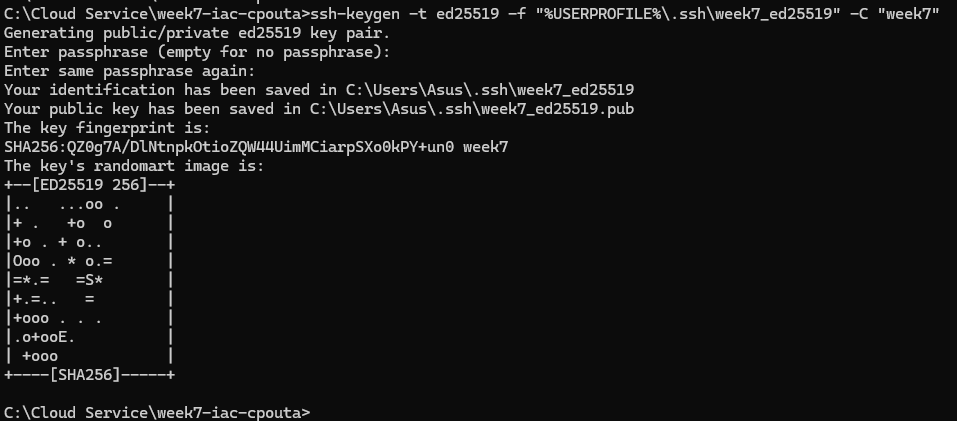
ssh-keygen -t ed25519 -f ~/.ssh/week7_ed25519 -C "week7" — only the fingerprint/randomart is shown here, never the private key itself.
Step 6 – Looking up values
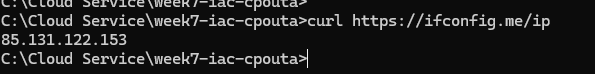
Found my public IP with curl https://ifconfig.me/ip, converted to CIDR form (/32) for ssh_allowed_cidr.
Step 7 – Writing the code
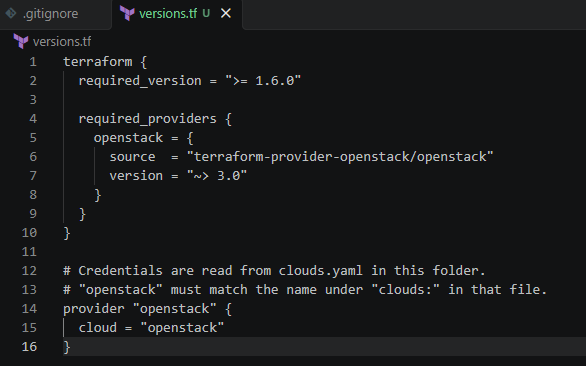
versions.tf – pins the OpenTofu and OpenStack provider versions, as given.
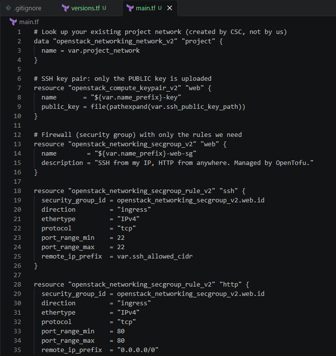
main.tf – the infrastructure resources, as given.
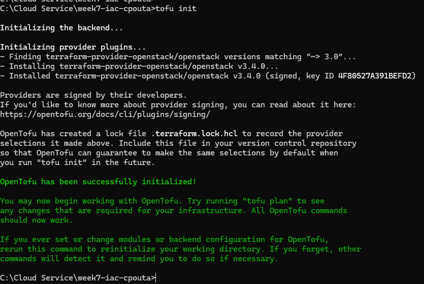
tofu init downloading the OpenStack provider plugin.
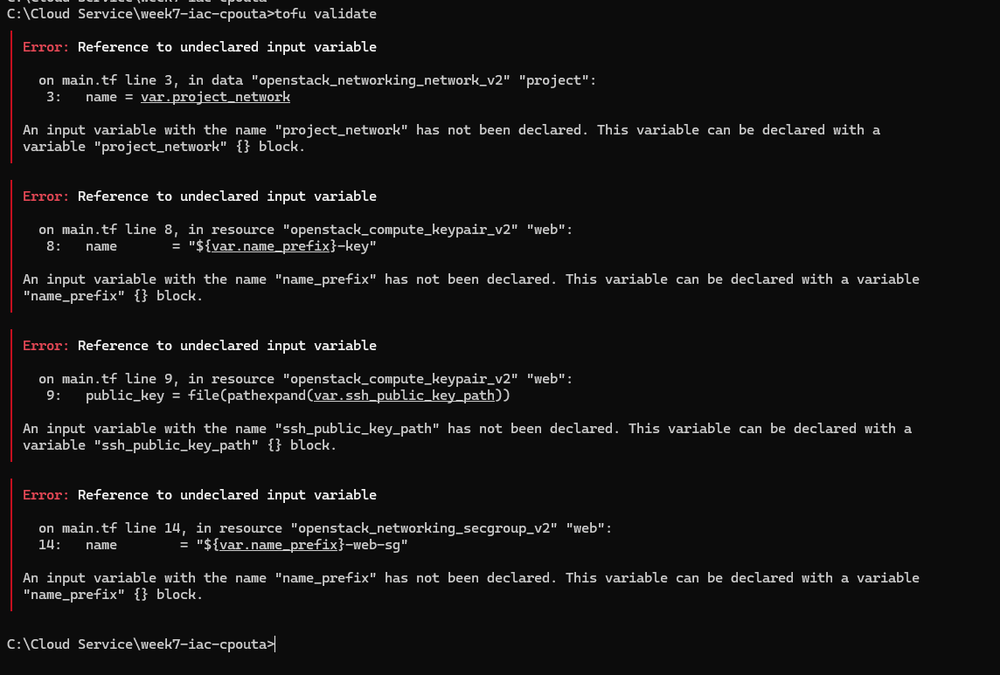
With only versions.tf and main.tf in place, tofu validate listed every undeclared variable — exactly the to-do list the guide describes.
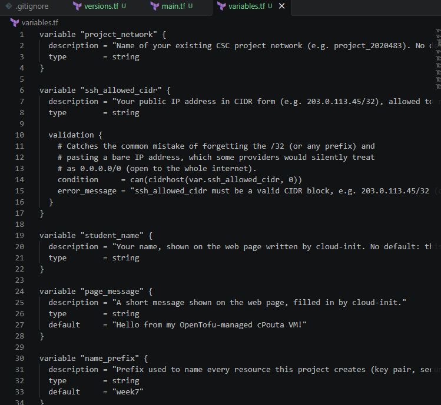
variables.tf written to satisfy every reference, each with a description and type, plus the CIDR validation rule on ssh_allowed_cidr.
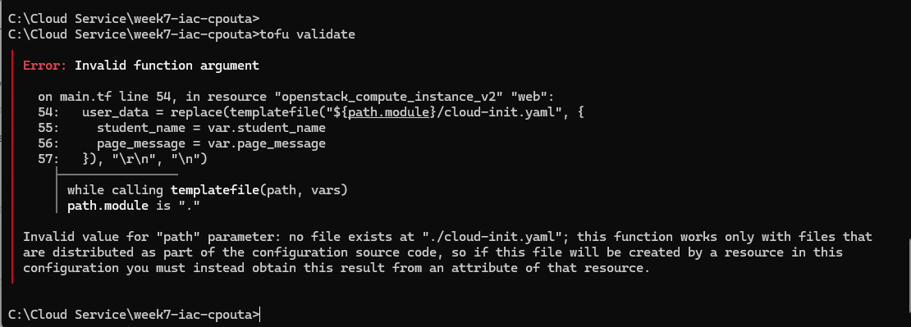
Next error: templatefile() couldn't find cloud-init.yaml yet — variables were now all declared correctly.
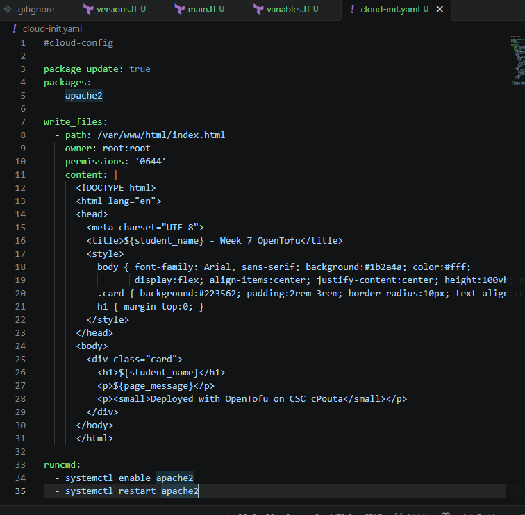
cloud-init.yaml – installs Apache, then writes my own index.html, then restarts Apache so my page (not the default page) is served.
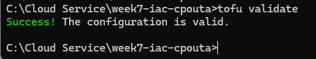
All errors resolved — Success! The configuration is valid.
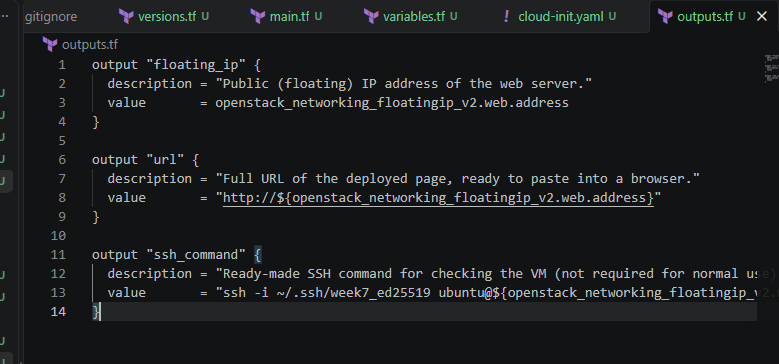
outputs.tf – floating IP, full URL, and a ready-made SSH command, each with a description.
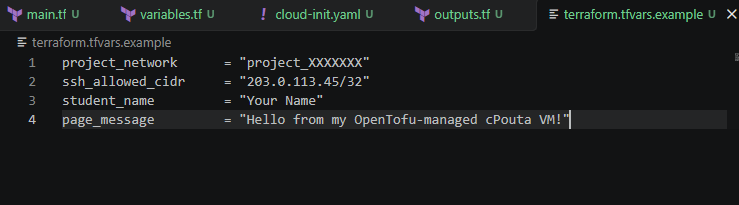
terraform.tfvars.example – placeholder values only, safe to commit.
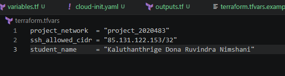
My real terraform.tfvars – ignored by Git, never pushed.
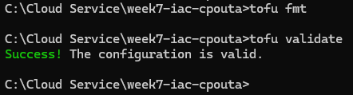
Final formatting pass and validation before moving to deploy.
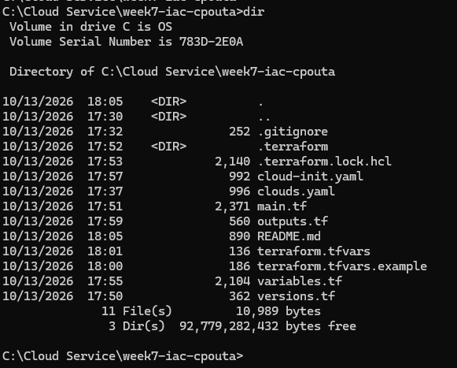
Final folder structure, matching what the guide expects.
Step 8 – Deploy
Prediction before running anything: counting the resource blocks in
main.tf (key pair, security group, two rules, port, VM, floating IP) gives 7. The
data block for the project network is a lookup, not a creation, so I expected
7 to add, 0 to change, 0 to destroy.
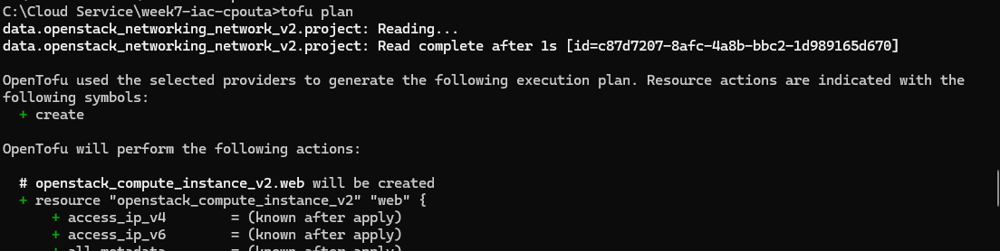
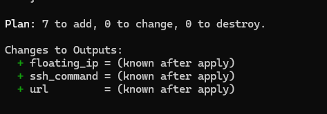
tofu plan matched the prediction exactly: Plan: 7 to add, 0 to change, 0 to destroy. The data source was read (visible as "Reading... / Read complete") but correctly did not count toward the total.
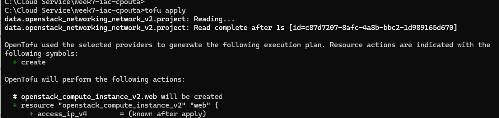
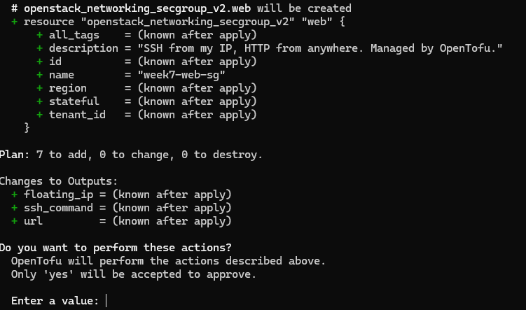
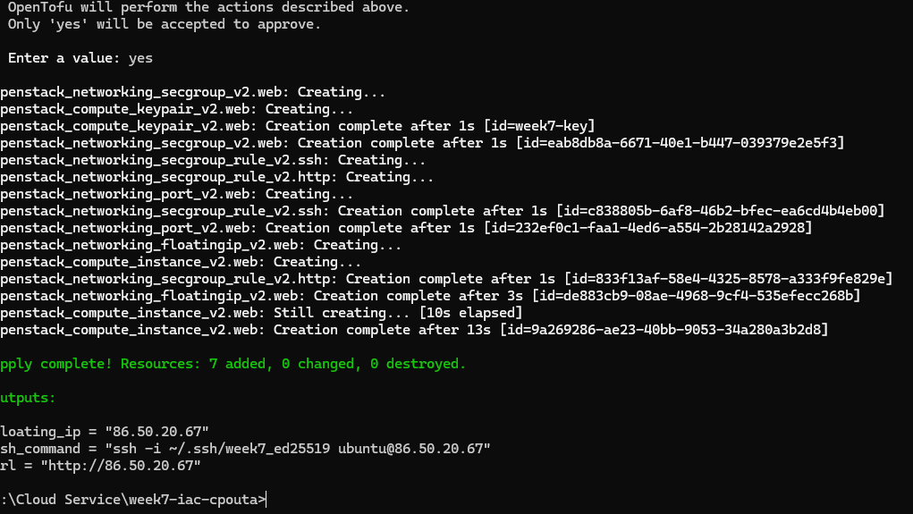
Apply complete! Resources: 7 added, 0 changed, 0 destroyed. All seven resources were created in under 20 seconds total — considerably faster than the manual Week 1 setup.
Step 9 – Checking the page works
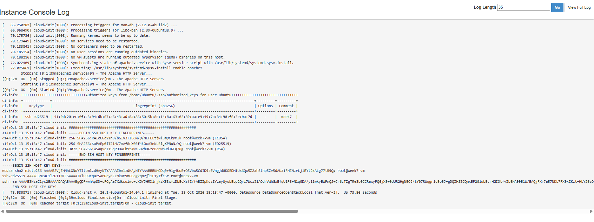
Instance console log confirming Cloud-init ... finished and Started The Apache HTTP Server.
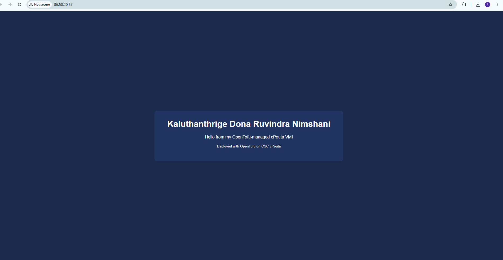
The page is live at the floating IP, showing my name and message — not the Apache default page.
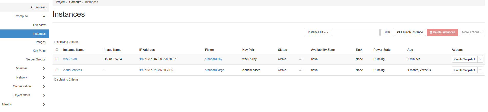
week7-vm appears under Compute → Instances with the week7- prefix, standard.tiny flavor, and the week7-key key pair — everything created by code, alongside my untouched Week 1 cloudServices VM.
Experiment 1 – Change
Before this experiment, cloud-init.yaml was extended to also write a small separate
/var/www/html/status.txt file from student_name/page_message,
independent of the diary page itself — this keeps those two variables meaningful to test without
touching the diary's own design.
Option A – Change the page text
Prediction (written before running anything):
- The VM will be destroyed and re-created, not updated in place, because
page_messageis baked intouser_dataviatemplatefile(), and changinguser_datais something OpenStack cannot apply to a running instance. - The public IP will not change, since the floating IP is a separate resource attached to the port, not to the instance directly.
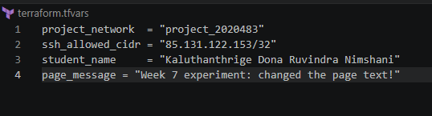
Changed page_message in terraform.tfvars to "Week 7 experiment: changed the page text!".
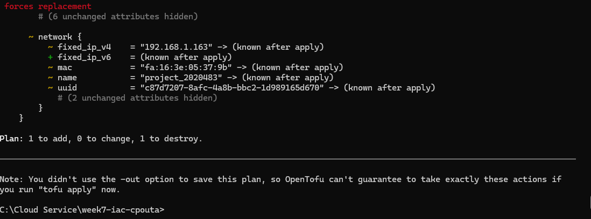
tofu plan: openstack_compute_instance_v2.web must be replaced, Plan: 1 to add, 0 to change, 1 to destroy.
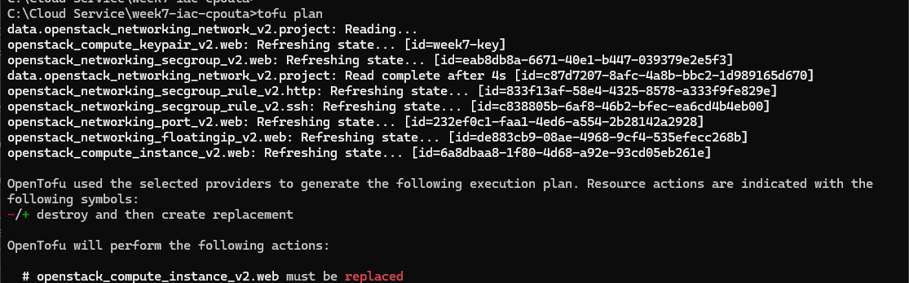
The line that explains why: user_data = "..." -> "..." # forces replacement.
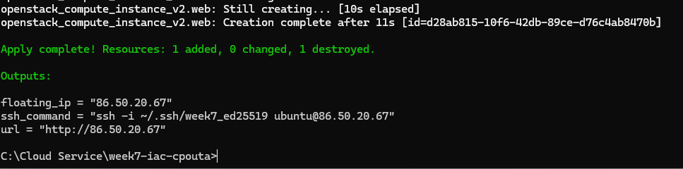
Apply complete! Resources: 1 added, 0 changed, 1 destroyed. Floating IP unchanged: 86.50.20.67.
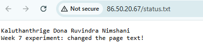
status.txt now shows the new message — confirming the new VM actually booted with the updated user_data.
Explanation:
- Which attribute caused it:
user_data, shown with# forces replacementin the plan. - Why it can't be changed in place: cloud-init only runs once, during a VM's first boot. There is no mechanism to make OpenStack "re-run" it on a live instance, so the only way to apply new
user_datais to destroy and recreate the VM. - Why the IP behaved this way: the floating IP (
openstack_networking_floatingip_v2.web) is attached to the port, not the instance. Since the port was untouched, the floating IP simply reattached to the new VM once it existed.
Option B – Allow HTTPS too
Prediction (written before running anything):
- Only 1 resource added, 0 changed, 0 destroyed — a new security group rule is an independent resource, unrelated to the VM's
user_data. - The VM will not be affected at all.
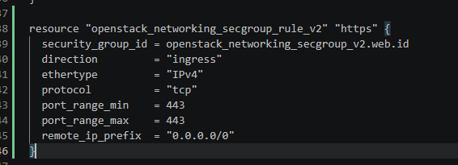
Added a new openstack_networking_secgroup_rule_v2.https resource opening TCP 443 from anywhere.
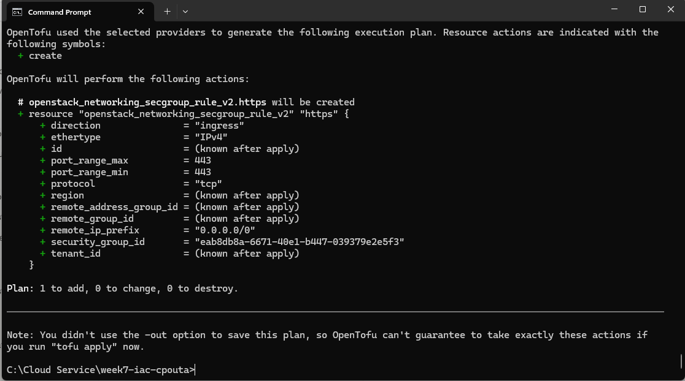
tofu plan: Plan: 1 to add, 0 to change, 0 to destroy. — matches the prediction exactly, and the VM does not appear in the plan at all.
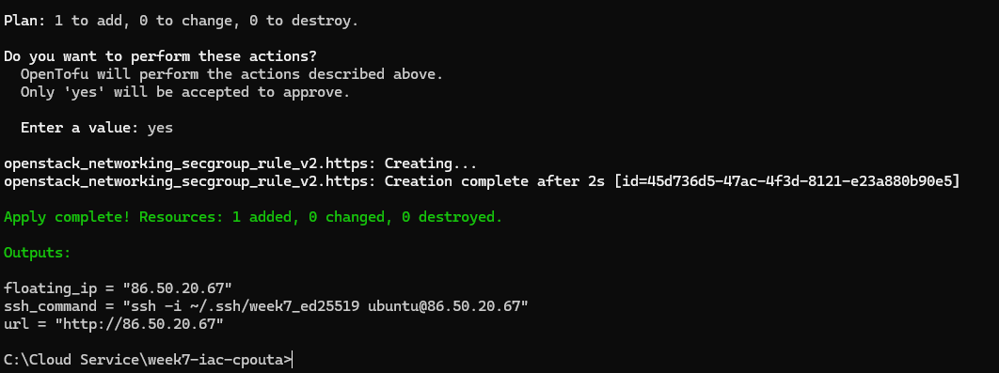
Apply complete! Resources: 1 added, 0 changed, 0 destroyed.
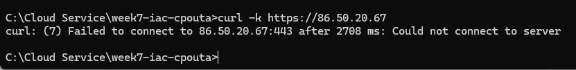
curl -k https://86.50.20.67 → Failed to connect ... Could not connect to server.
Explanation:
- How this differs from Option A: Option A changed
user_data, which forced a full VM replace. Option B only added a security group rule — a firewall-level change enforced by the network layer, completely independent of the instance's boot configuration, so OpenStack applied it instantly without touching the VM. - Does the page work over HTTPS? No. Opening port 443 at the firewall only means traffic on that port is no longer blocked — it does not mean anything is listening on it. Apache was only configured by cloud-init to listen on port 80, with no TLS virtual host and no certificate, so the connection fails at the TCP level before ever reaching an application.
Experiment 2 – Drift
Part 1 – Delete a rule by hand
Prediction (written before running anything):
- Deleting the HTTP rule in the web console will break the page immediately, since port 80 is how the floating IP is reached.
tofu planwill notice the rule is missing and propose to re-create it, because this rule is a resource OpenTofu created and is tracked in its state file.
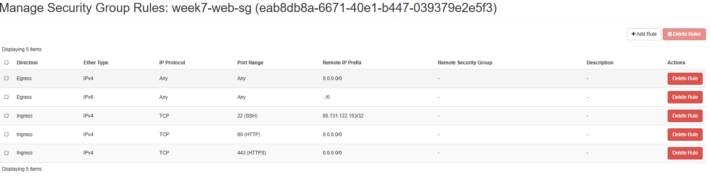
week7-web-sg before the change: 5 rules, including 80 (HTTP) from 0.0.0.0/0.
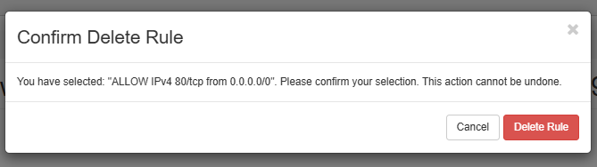
Manually deleting the HTTP rule through Network → Security Groups → Manage Rules, bypassing OpenTofu entirely.
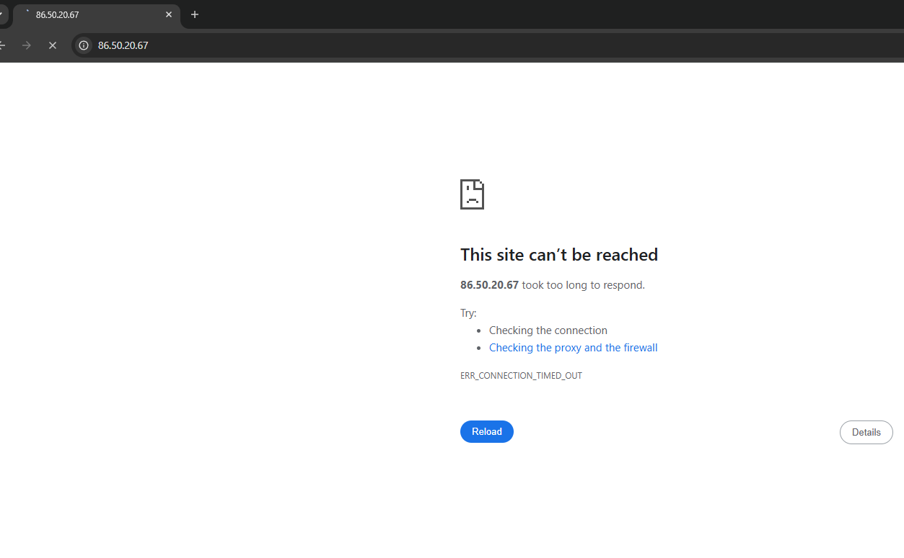
Opened the diary page in a private browser window: ERR_CONNECTION_TIMED_OUT. Port 80 is now blocked at the firewall, so the page cannot load even though the VM and Apache are both still running fine.
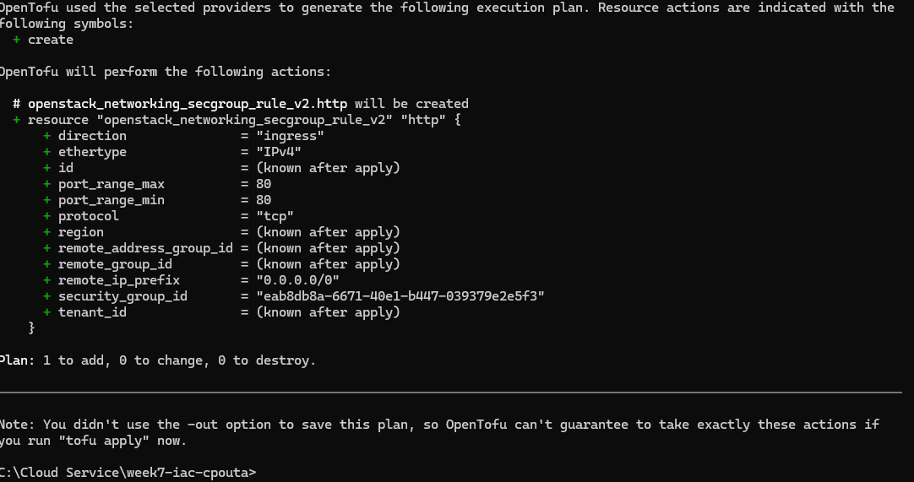
tofu plan: openstack_networking_secgroup_rule_v2.http will be created, Plan: 1 to add, 0 to change, 0 to destroy. Matches the prediction — OpenTofu detected the drift straight away.
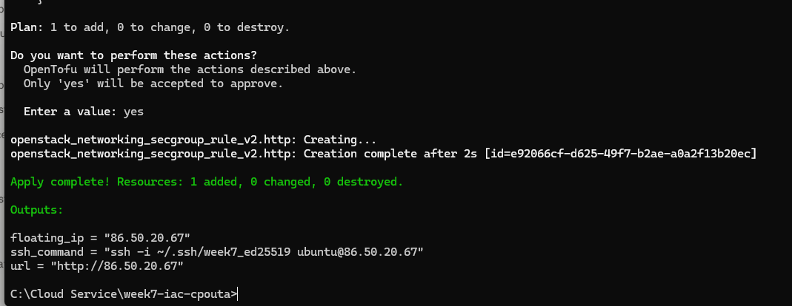
tofu apply: Apply complete! Resources: 1 added, 0 changed, 0 destroyed. The HTTP rule exists again with a brand-new rule ID.
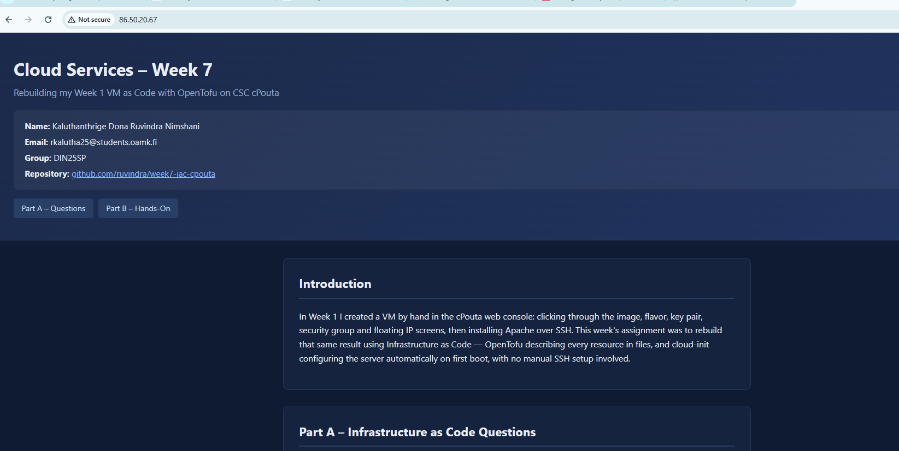
Page loads again immediately — no VM replacement was needed, since nothing about the instance itself ever changed.
Explanation:
- OpenTofu's state file records every resource it created, including this exact security group rule, by ID. When
tofu planrefreshes state against the real infrastructure and finds that ID no longer exists in OpenStack, it treats this the same as any other missing resource: something declared in code is absent from reality, so it proposes to create it again. - This is configuration drift in its simplest form — a manual, out-of-band change (deleting a rule through the console, "ClickOps") that silently diverges the real infrastructure from what the code says it should be, exactly as described in Part A Q3.
Part 2 – Add an untracked rule by hand
Prediction (written before running anything):
tofu planwill say "No changes" and will not propose removing the new rule, unlike Part 1.- Reasoning: OpenTofu only compares resources it knows about (declared in code, tracked in state) against reality. A rule added entirely outside that workflow was never declared, so it has nothing to compare it to and no reason to flag it.
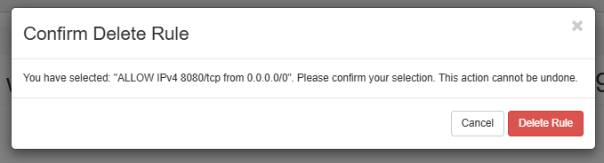
Added a Custom TCP Rule, Ingress, port 8080, CIDR 0.0.0.0/0 through the console. The security group now shows 6 rules, with the new one not declared anywhere in main.tf.
tofu plan refreshes exactly the 9 resources OpenTofu knows about (keypair, secgroup, 3 rules – ssh/http/https, port, floating IP, instance, network data). The port 8080 rule never appears in this list at all.
No changes. Your infrastructure matches the configuration. — confirms the prediction exactly.
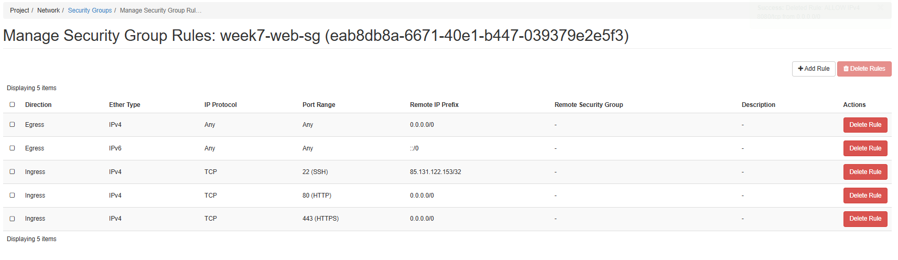
Cleaned up afterwards by deleting the port 8080 rule manually, back to the original 5 rules.
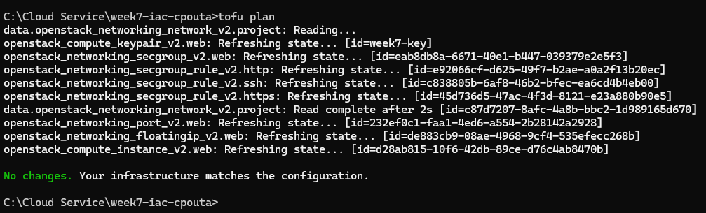
tofu plan still reports No changes — adding or removing this rule never touched OpenTofu's state either way.
Explanation – why Part 1 and Part 2 behave differently:
- Part 1 (delete a tracked rule): the rule existed in OpenTofu's state. Removing it from reality creates a mismatch between state and reality that OpenTofu can see and fix.
- Part 2 (add an untracked rule): the rule never existed in OpenTofu's state, because OpenTofu never created it. Drift detection is a one-directional comparison — state → reality, not reality → state — so a resource created completely outside the code is invisible to
tofu planuntil it is explicitly imported (e.g. withtofu import). - This is exactly the "blind spot" described in Part A Q3: an IaC tool can only compare against resources it already manages.
Experiment 3 – Destroy and Re-create
Prediction (written before running anything):
- How many resources, and will it touch the project network? All 8 resources OpenTofu created (keypair, security group, 3 rules, port, floating IP, instance) will be destroyed. The project network will not be touched, because it's only looked up with a
datasource — OpenTofu never created it, so it has no authority to delete it. - Destroy order: dependent resources first, the things everything else relies on last — so the security group rules and the instance should go before the security group itself, since the group can't be deleted while rules still reference it.
- Floating IP after re-apply: this time the floating IP resource itself is being destroyed, not just the instance, so the address will most likely be different after
tofu apply— unlike Experiments 1 and 2, where the floating IP was never touched.
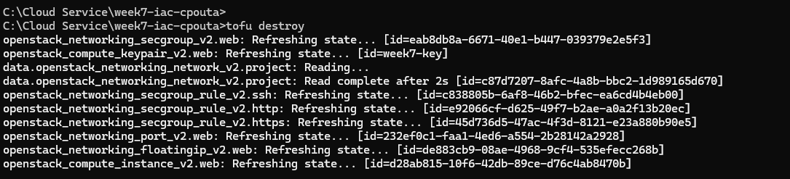
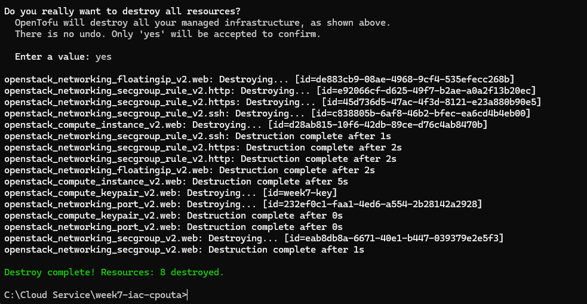
tofu destroy: Destroy complete! Resources: 8 destroyed. The real order from the output:
- First wave (parallel): floating IP, all 3 security group rules (ssh/http/https), and the instance — none of these have anything left depending on them, so OpenTofu tears them down together. The instance takes the longest (5s), the rest finish in 1–2s.
- Second wave: the keypair and the port — the port couldn't be removed earlier because the instance was still attached to it.
- Last: the security group itself — it can only be deleted once every rule referencing it is already gone.
Notice data.openstack_networking_network_v2.project only appears as "Reading..." at the very top — it is never destroyed. Confirms the prediction: a data source is a read-only lookup, not a managed resource, so OpenTofu has no destroy authority over it. The project network (and the untouched Week 1 VM sitting on it) survive completely.
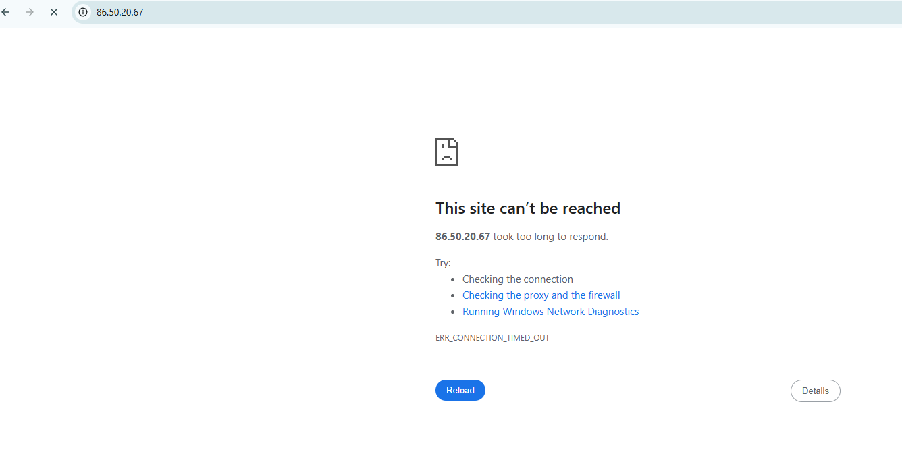
The old address, 86.50.20.67, now times out — the floating IP resource that used to answer there no longer exists.
tofu apply: Apply complete! Resources: 8 added, 0 changed, 0 destroyed. New outputs: floating_ip = "86.50.20.250" — a different address from before, exactly as predicted.
The full diary loads again at the new address, http://86.50.20.250/ — same content, new IP, with no manual steps beyond tofu apply.
Explanation:
- Why the destroy order was what it was: OpenTofu builds a dependency graph from the resource references in
main.tf(e.g. the security group rules referenceopenstack_networking_secgroup_v2.web.id, the instance references the port and the security group). On destroy, it works backwards through that graph — a resource can only be destroyed once nothing still depends on it, which is exactly why the rules and instance went first and the security group went last. - Why the project network survived: it's declared as
data "openstack_networking_network_v2", a read-only lookup of something that already existed before this project ever ran. OpenTofu's state only tracks resources it is responsible for creating and destroying; a data source is explicitly outside that contract. - Why the IP changed this time, when it didn't in Experiments 1/2: in those experiments only the instance (attached to the port) was replaced, while
openstack_networking_floatingip_v2.webitself was left alone, so the address never moved. Here the floating IP resource was destroyed along with everything else, releasing it back to cPouta's shared pool. When it was created again, OpenStack had no reason to hand back the exact same address — it just allocated the next one available. - Why a changing IP matters less with an output, and what would be needed if it had to stay fixed: because
outputs.tfprints the currentfloating_ip/urlstraight after everyapply, there's never any guesswork about the current address — it's always right there in the terminal. If the address genuinely had to stay fixed (e.g. for a DNS record or a published documentation link), cPouta would need a reserved/static floating IP tracked by its own ID in Terraform/OpenTofu, re-associated to the new port, rather than relying on a freshly-allocated one. - Rebuild time vs. Week 1: the entire destroy-then-apply cycle here took under a minute of actual command time (destroy ~5s wall-clock for the slowest resource, apply ~13s for the instance, plus cloud-init finishing in the background). In Week 1, creating the same end result meant manually clicking through the image/flavor/key pair/security group/floating IP screens and then SSHing in to install Apache by hand — several minutes of manual, error-prone steps every single time. Here it's one command, and it's exactly repeatable.